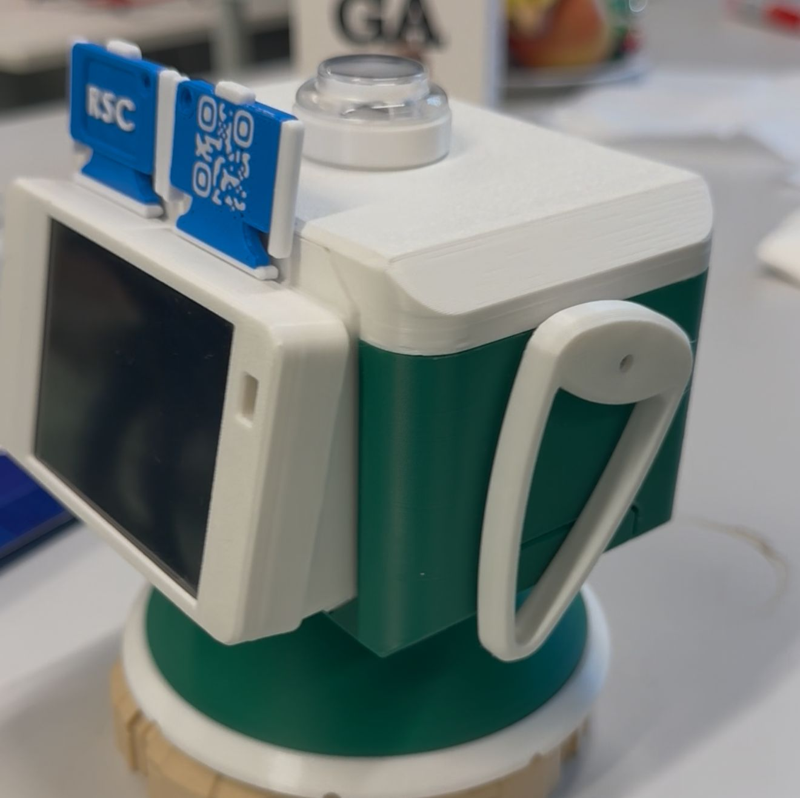

Projects
Robotics, embedded systems, HRI, and expressive companion-robot design.


Pia-the-μRSC
Portable micro study-companion robot built on Raspberry Pi Pico.
I engineered a highly portable and low-cost μ-version of the Robotic Study Companion (RSC). The project focuses on CAD redesign, servo-mechanism optimization, sensor integration, MicroPython firmware, and full reproducibility-focused documentation.

Robotic Study Companion (RSC)
Companion-robot platform for learning support and HRI research. Contributed to RSC v4 / v4.1 with focus on hardware robustness, improved servo mounting, cable-management redesign, and detailed assembly documentation.